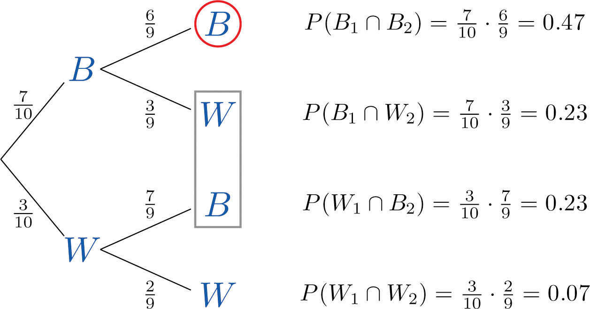

Suppose a fair die has been rolled and you are asked to give the probability that it was a five. There are six equally likely outcomes, so your answer is 1/6. But suppose that before you give your answer you are given the extra information that the number rolled was odd. Since there are only three odd numbers that are possible, one of which is five, you would certainly revise your estimate of the likelihood that a five was rolled from 1/6 to 1/3. In general, the revised probability that an event A has occurred, taking into account the additional information that another event B has definitely occurred on this trial of the experiment, is called the conditional probability of A given B and is denoted by The reasoning employed in this example can be generalized to yield the computational formula in the following definition.
The conditional probabilityThe probability of the event A taking into account the fact that event B is known to have occurred. of A given B, denoted , is the probability that event A has occurred in a trial of a random experiment for which it is known that event B has definitely occurred. It may be computed by means of the following formula:
Rule for Conditional Probability
A fair die is rolled.
Solution:
The sample space for this experiment is the set consisting of six equally likely outcomes. Let F denote the event “a five is rolled” and let O denote the event “an odd number is rolled,” so that
This is the introductory example, so we already know that the answer is 1/3. To use the formula in the definition to confirm this we must replace A in the formula (the event whose likelihood we seek to estimate) by F and replace B (the event we know for certain has occurred) by O:
Since ,
Since ,
Thus
This is the same problem, but with the roles of F and O reversed. Since we are given that the number that was rolled is five, which is odd, the probability in question must be 1. To apply the formula to this case we must now replace A (the event whose likelihood we seek to estimate) by O and B (the event we know for certain has occurred) by F:
Obviously In part (a) we found that Thus
Just as we did not need the computational formula in this example, we do not need it when the information is presented in a two-way classification table, as in the next example.
In a sample of 902 individuals under 40 who were or had previously been married, each person was classified according to gender and age at first marriage. The results are summarized in the following two-way classification table, where the meaning of the labels is:
| E | W | H | Total | |
|---|---|---|---|---|
| M | 43 | 293 | 114 | 450 |
| F | 82 | 299 | 71 | 452 |
| Total | 125 | 592 | 185 | 902 |
The numbers in the first row mean that 43 people in the sample were men who were first married in their teens, 293 were men who were first married in their twenties, 114 men who were first married in their thirties, and a total of 450 people in the sample were men. Similarly for the numbers in the second row. The numbers in the last row mean that, irrespective of gender, 125 people in the sample were married in their teens, 592 in their twenties, 185 in their thirties, and that there were 902 people in the sample in all. Suppose that the proportions in the sample accurately reflect those in the population of all individuals in the population who are under 40 and who are or have previously been married. Suppose such a person is selected at random.
Solution:
It is natural to let E also denote the event that the person selected was a teenager at first marriage and to let M denote the event that the person selected is male.
Since it is known that the person selected is male, all the females may be removed from consideration, so that only the row in the table corresponding to men in the sample applies:
| E | W | H | Total | |
|---|---|---|---|---|
| M | 43 | 293 | 114 | 450 |
The proportion of males in the sample who were in their teens at their first marriage is 43/450. This is the relative frequency of such people in the population of males, hence or about 10%.
In the next example, the computational formula in the definition must be used.
Suppose that in an adult population the proportion of people who are both overweight and suffer hypertension is 0.09; the proportion of people who are not overweight but suffer hypertension is 0.11; the proportion of people who are overweight but do not suffer hypertension is 0.02; and the proportion of people who are neither overweight nor suffer hypertension is 0.78. An adult is randomly selected from this population.
Solution:
Let H denote the event “the person selected suffers hypertension.” Let O denote the event “the person selected is overweight.” The probability information given in the problem may be organized into the following contingency table:
| O | Oc | |
|---|---|---|
| H | 0.09 | 0.11 |
| Hc | 0.02 | 0.78 |
Using the formula in the definition of conditional probability,
Using the formula in the definition of conditional probability,
Although typically we expect the conditional probability to be different from the probability of A, it does not have to be different from When , the occurrence of B has no effect on the likelihood of A. Whether or not the event A has occurred is independent of the event B.
Using algebra it can be shown that the equality holds if and only if the equality holds, which in turn is true if and only if This is the basis for the following definition.
Events A and B are independentEvents whose probability of occurring together is the product of their individual probabilities. if
If A and B are not independent then they are dependent.
The formula in the definition has two practical but exactly opposite uses:
In a situation in which we can compute all three probabilities , , and , it is used to check whether or not the events A and B are independent:
A single fair die is rolled. Let and Are A and B independent?
Solution:
In this example we can compute all three probabilities , , and Since the product is not the same number as , the events A and B are not independent.
The two-way classification of married or previously married adults under 40 according to gender and age at first marriage in Note 3.48 "Example 21" produced the table
| E | W | H | Total | |
|---|---|---|---|---|
| M | 43 | 293 | 114 | 450 |
| F | 82 | 299 | 71 | 452 |
| Total | 125 | 592 | 185 | 902 |
Determine whether or not the events F: “female” and E: “was a teenager at first marriage” are independent.
Solution:
The table shows that in the sample of 902 such adults, 452 were female, 125 were teenagers at their first marriage, and 82 were females who were teenagers at their first marriage, so that
Since
is not the same as
we conclude that the two events are not independent.
Many diagnostic tests for detecting diseases do not test for the disease directly but for a chemical or biological product of the disease, hence are not perfectly reliable. The sensitivity of a test is the probability that the test will be positive when administered to a person who has the disease. The higher the sensitivity, the greater the detection rate and the lower the false negative rate.
Suppose the sensitivity of a diagnostic procedure to test whether a person has a particular disease is 92%. A person who actually has the disease is tested for it using this procedure by two independent laboratories.
Solution:
Let A1 denote the event “the test by the first laboratory is positive” and let A2 denote the event “the test by the second laboratory is positive.” Since A1 and A2 are independent,
Using the Additive Rule for Probability and the probability just computed,
The specificity of a diagnostic test for a disease is the probability that the test will be negative when administered to a person who does not have the disease. The higher the specificity, the lower the false positive rate.
Suppose the specificity of a diagnostic procedure to test whether a person has a particular disease is 89%.
Solution:
Let B denote the event “the test result is positive.” The complement of B is that the test result is negative, and has probability the specificity of the test, 0.89. Thus
Let B1 denote the event “the test by the first laboratory is positive” and let B2 denote the event “the test by the second laboratory is positive.” Since B1 and B2 are independent, by part (a) of the example
The concept of independence applies to any number of events. For example, three events A, B, and C are independent if Note carefully that, as is the case with just two events, this is not a formula that is always valid, but holds precisely when the events in question are independent.
The reliability of a system can be enhanced by redundancy, which means building two or more independent devices to do the same job, such as two independent braking systems in an automobile.
Suppose a particular species of trained dogs has a 90% chance of detecting contraband in airline luggage. If the luggage is checked three times by three different dogs independently of one another, what is the probability that contraband will be detected?
Solution:
Let D1 denote the event that the contraband is detected by the first dog, D2 the event that it is detected by the second dog, and D3 the event that it is detected by the third. Since each dog has a 90% of detecting the contraband, by the Probability Rule for Complements it has a 10% chance of failing. In symbols, , and
Let D denote the event that the contraband is detected. We seek It is easier to find , because although there are several ways for the contraband to be detected, there is only one way for it to go undetected: all three dogs must fail. Thus , and
But the events D1, D2, and D3 are independent, which implies that their complements are independent, so
Using this number in the previous display we obtain
That is, although any one dog has only a 90% chance of detecting the contraband, three dogs working independently have a 99.9% chance of detecting it.
Some probability problems are made much simpler when approached using a tree diagram. The next example illustrates how to place probabilities on a tree diagram and use it to solve a problem.
A jar contains 10 marbles, 7 black and 3 white. Two marbles are drawn without replacement, which means that the first one is not put back before the second one is drawn.
Solution:
A tree diagram for the situation of drawing one marble after the other without replacement is shown in Figure 3.6 "Tree Diagram for Drawing Two Marbles". The circle and rectangle will be explained later, and should be ignored for now.
Figure 3.6 Tree Diagram for Drawing Two Marbles
The numbers on the two leftmost branches are the probabilities of getting either a black marble, 7 out of 10, or a white marble, 3 out of 10, on the first draw. The number on each remaining branch is the probability of the event corresponding to the node on the right end of the branch occurring, given that the event corresponding to the node on the left end of the branch has occurred. Thus for the top branch, connecting the two Bs, it is , where B1 denotes the event “the first marble drawn is black” and B2 denotes the event “the second marble drawn is black.” Since after drawing a black marble out there are 9 marbles left, of which 6 are black, this probability is 6/9.
The number to the right of each final node is computed as shown, using the principle that if the formula in the Conditional Rule for Probability is multiplied by , then the result is
The event “at least one marble is black” corresponds to the three nodes of the tree enclosed by either the circle or the rectangle. The events that correspond to these nodes are mutually exclusive, so as in part (b) we merely add the probabilities next to these nodes. Thus the probability of drawing at least one black marble in two tries is
Of course, this answer could have been found more easily using the Probability Law for Complements, simply subtracting the probability of the complementary event, “two white marbles are drawn,” from 1 to obtain
As this example shows, finding the probability for each branch is fairly straightforward, since we compute it knowing everything that has happened in the sequence of steps so far. Two principles that are true in general emerge from this example:
For two events A and B, , , and
For two events A and B, , , and
For independent events A and B, and
For independent events A and B, and
For mutually exclusive events A and B, and
For mutually exclusive events A and B, and
Compute the following probabilities in connection with the roll of a single fair die.
Compute the following probabilities in connection with two tosses of a fair coin.
A special deck of 16 cards has 4 that are blue, 4 yellow, 4 green, and 4 red. The four cards of each color are numbered from one to four. A single card is drawn at random. Find the following probabilities.
A special deck of 16 cards has 4 that are blue, 4 yellow, 4 green, and 4 red. The four cards of each color are numbered from one to four. A single card is drawn at random. Find the following probabilities.
A random experiment gave rise to the two-way contingency table shown. Use it to compute the probabilities indicated.
| R | S | |
|---|---|---|
| A | 0.12 | 0.18 |
| B | 0.28 | 0.42 |
A random experiment gave rise to the two-way contingency table shown. Use it to compute the probabilities indicated.
| R | S | |
|---|---|---|
| A | 0.13 | 0.07 |
| B | 0.61 | 0.19 |
Suppose for events A and B in a random experiment and Compute the indicated probability, or explain why there is not enough information to do so.
Suppose for events A and B connected to some random experiment, and Compute the indicated probability, or explain why there is not enough information to do so.
Suppose for events A, B, and C connected to some random experiment, A, B, and C are independent and , , and Compute the indicated probability, or explain why there is not enough information to do so.
Suppose for events A, B, and C connected to some random experiment, A, B, and C are independent and , , and Compute the indicated probability, or explain why there is not enough information to do so.
The sample space that describes all three-child families according to the genders of the children with respect to birth order is
In the experiment of selecting a three-child family at random, compute each of the following probabilities, assuming all outcomes are equally likely.
The following two-way contingency table gives the breakdown of the population in a particular locale according to age and number of vehicular moving violations in the past three years:
| Age | Violations | ||
|---|---|---|---|
| 0 | 1 | 2+ | |
| Under 21 | 0.04 | 0.06 | 0.02 |
| 21–40 | 0.25 | 0.16 | 0.01 |
| 41–60 | 0.23 | 0.10 | 0.02 |
| 60+ | 0.08 | 0.03 | 0.00 |
A person is selected at random. Find the following probabilities.
The following two-way contingency table gives the breakdown of the population in a particular locale according to party affiliation (A, B, C, or None) and opinion on a bond issue:
| Affiliation | Opinion | ||
|---|---|---|---|
| Favors | Opposes | Undecided | |
| A | 0.12 | 0.09 | 0.07 |
| B | 0.16 | 0.12 | 0.14 |
| C | 0.04 | 0.03 | 0.06 |
| None | 0.08 | 0.06 | 0.03 |
A person is selected at random. Find each of the following probabilities.
The following two-way contingency table gives the breakdown of the population of patrons at a grocery store according to the number of items purchased and whether or not the patron made an impulse purchase at the checkout counter:
| Number of Items | Impulse Purchase | |
|---|---|---|
| Made | Not Made | |
| Few | 0.01 | 0.19 |
| Many | 0.04 | 0.76 |
A patron is selected at random. Find each of the following probabilities.
The following two-way contingency table gives the breakdown of the population of adults in a particular locale according to employment type and level of life insurance:
| Employment Type | Level of Insurance | ||
|---|---|---|---|
| Low | Medium | High | |
| Unskilled | 0.07 | 0.19 | 0.00 |
| Semi-skilled | 0.04 | 0.28 | 0.08 |
| Skilled | 0.03 | 0.18 | 0.05 |
| Professional | 0.01 | 0.05 | 0.02 |
An adult is selected at random. Find each of the following probabilities.
The sample space of equally likely outcomes for the experiment of rolling two fair dice is
Identify the events N: the sum is at least nine, T: at least one of the dice is a two, and F: at least one of the dice is a five.
The sensitivity of a drug test is the probability that the test will be positive when administered to a person who has actually taken the drug. Suppose that there are two independent tests to detect the presence of a certain type of banned drugs in athletes. One has sensitivity 0.75; the other has sensitivity 0.85. If both are applied to an athlete who has taken this type of drug, what is the chance that his usage will go undetected?
A man has two lights in his well house to keep the pipes from freezing in winter. He checks the lights daily. Each light has probability 0.002 of burning out before it is checked the next day (independently of the other light).
An accountant has observed that 5% of all copies of a particular two-part form have an error in Part I, and 2% have an error in Part II. If the errors occur independently, find the probability that a randomly selected form will be error-free.
A box contains 20 screws which are identical in size, but 12 of which are zinc coated and 8 of which are not. Two screws are selected at random, without replacement.
Events A and B are mutually exclusive. Find
The city council of a particular city is composed of five members of party A, four members of party B, and three independents. Two council members are randomly selected to form an investigative committee.
A basketball player makes 60% of the free throws that he attempts, except that if he has just tried and missed a free throw then his chances of making a second one go down to only 30%. Suppose he has just been awarded two free throws.
An economist wishes to ascertain the proportion p of the population of individual taxpayers who have purposely submitted fraudulent information on an income tax return. To truly guarantee anonymity of the taxpayers in a random survey, taxpayers questioned are given the following instructions.
The questioner is not told how the coin landed, so he does not know if a “Yes” answer is the truth or is given only because of the coin toss.
Using the Probability Rule for Complements and the independence of the coin toss and the taxpayers’ status fill in the empty cells in the two-way contingency table shown. Assume that the coin is fair. Each cell except the two in the bottom row will contain the unknown proportion (or probability) p.
| Status | Coin | Probability | |
|---|---|---|---|
| H | T | ||
| Fraud | p | ||
| No fraud | |||
| Probability | 1 | ||
The only information that the economist sees are the entries in the following table:
Equate the entry in the one cell in the table in (a) that corresponds to the answer “No” to the number s to obtain the formula that expresses the unknown number p in terms of the known number s.
0.0375
0.931
0